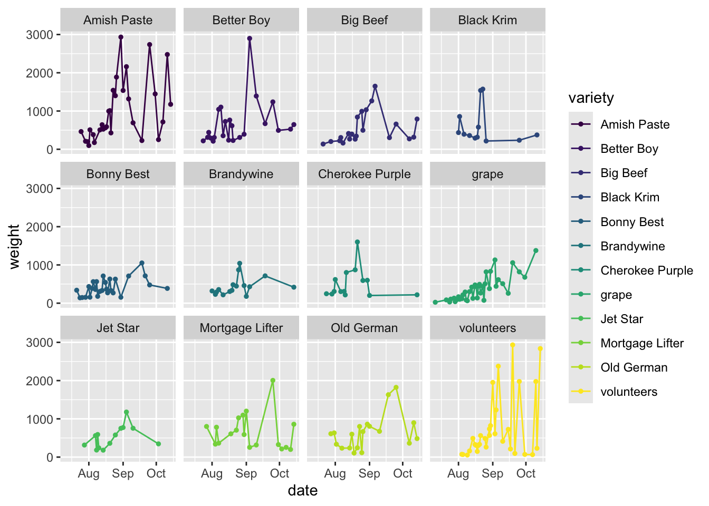
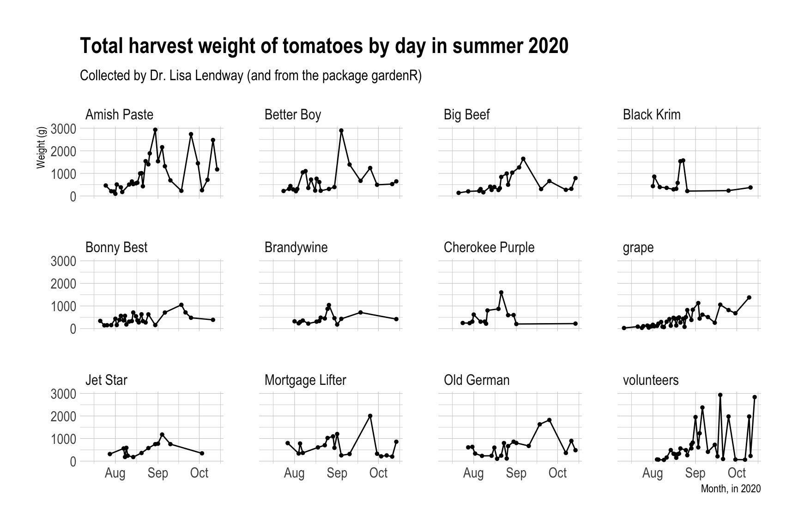

ggplot 102: Facets, Scales, Labels, and Themes (and still üçÖ)
Week 6
Introduction
We will will build upon our last lesson on ggplot101 which focused on an overall understanding of the grammar of graphics, basic syntax, adding data, aesthetic mappings, and geoms. Today we will focus on some of the other more commonly adjusted layers:
Load libraries and data
Before we get started, let’s load our libraries and data.
library(tidyverse)
library(gardenR)And let’s remember whats in garden_harvest.
glimpse(garden_harvest)Rows: 781
Columns: 5
$ vegetable <chr> "lettuce", "radish", "lettuce", "lettuce", "radish", "lettuc…
$ variety <chr> "reseed", "Garden Party Mix", "reseed", "reseed", "Garden Pa…
$ date <date> 2020-06-06, 2020-06-06, 2020-06-08, 2020-06-09, 2020-06-11,…
$ weight <dbl> 20, 36, 15, 10, 67, 12, 9, 8, 53, 19, 14, 10, 48, 58, 8, 121…
$ units <chr> "grams", "grams", "grams", "grams", "grams", "grams", "grams…Facets
Faceting allows to create small multiples of plots, enabling the easy comparison across the entirety of your data. A benefit of plots like this is they are all structured the same way, so once you understand one, you can begin to look at trends across groups/treatments/conditions simply and easily.
Here is a more infographic example of using small multiples.
So we can easily see that states with more of a maroon color have a lower than average life expectancy, while those that are higher than average are orange. We also can see easily where each state is on the map, so we can begin to understand how geography is related to life expectancy. We can also see which states have gotten better (i.e. their people live longer) with time, and those that haven’t. And this is all with a quick glance!
If we look back to the plot we were using as our example last week, can see how we have a plot faceted by tomato variety.
First lets select only the data for tomatoes.
# filter data to include only tomatoes
# filter() is a useful function from dplyr (part of tidyverse)
# it allows us to select observations based on their values
garden_harvest_tomato <- garden_harvest |>
filter(vegetable == "tomatoes")Let’s remember what our base plot is currently looking like.
garden_harvest_tomato |>
ggplot(aes(x = date, y = weight, color = variety)) +
geom_line() +
geom_point(size = 1) 
See how crowded this is? I think faceting might help us better see our data by variety.
There are two functions that allow you to facet:
facet_wrap: allows to lay out your facets in a wrapped type. You can usefacet_wrapif you have 1 variable you’d like to facet on.facet_grid: allows you to lay out your facets in a grid. You can usefacet_gridif you have 1 or 2 variables you’d like to facet on.
There are a few different sets of syntax that work for faceting, but I think this is the most intuitive.
garden_harvest_tomato |>
ggplot(aes(x = date, y = weight)) +
geom_line() +
geom_point(size = 1) +
facet_wrap(vars(variety))
We will get a very reasonably different looking plot with facet_grid with the default settings.
garden_harvest_tomato |>
ggplot(aes(x = date, y = weight)) +
geom_line() +
geom_point(size = 1) +
facet_grid(vars(variety))
Note because you have provided only one variable, ggplot has put that facet in one row.
garden_harvest_tomato |>
ggplot(aes(x = date, y = weight)) +
geom_line() +
geom_point(size = 1) +
facet_grid(cols = vars(variety))
We can make the faceting go by column, but this is also looks bad in this case
However, you might be thinking now that if you have two variables, and you want to facet by the combination of them, you could do that with facet_grid. Here is an example with the mpg dataset from the tidyverse (since there isn’t really good data to demonstrate this from garden_harevst).
mpg |>
ggplot(aes(x = cty, y = hwy)) + # city and highway gas mileage
geom_point() +
facet_grid(cols = vars(class), # category of car
rows = vars(drv)) # type of drive train, 4 wheel, front, rear
The default in both facet_wrap and facet_grid are for the x and y-axis to be fixed and constant among all the plots. This is often what you want to take advance of the comparisons between small multiples, but this is something you can change if you want. You can adjust the scales within facets to:
scales = "fixed": both the x- and y-axes are fixed for all plots to be the same (this is the default)scales = "free": both the x- and y-axes are set per plotscales = "free_x": the x-axis scales are free between plotsscales = "free_y": the y-axis scales are free between plots
garden_harvest_tomato |>
ggplot(aes(x = date, y = weight)) +
geom_line() +
geom_point(size = 1) +
facet_wrap(vars(variety), scales = "free")
Do note how this affects how easy it is to compare among the facets now. Also note that in this case, since we have all the same x-axis labels between the plots, when we set scales = "free" it really only changes the y, making it functionally equivalent to scales = "free_y". This will not hold true in other situations.
Scales
Using scales allows you to control how the data are linked to the visual properties of your plot. Some books will include labels as a part of scales but I’m going to cover them separately.
Scales allow you to pick colors, shapes, alphas, lines, transformations (e.g. scaling your axes to a log scale), and others. You can also use scales to set the limits of your plots.
Scales functions start with scale_.
Here are some common things you might do with the scale_ functions.
Position scales
You can set position scales for dates/times (like we have here), x and y data, binned data, continuous data, and for discrete data.
Here is one example for date/time data, which is what we have here. The date-time POSIX standards are listed here.
garden_harvest_tomato |>
ggplot(aes(x = date, y = weight)) +
geom_line() +
geom_point(size = 1) +
facet_wrap(vars(variety)) +
scale_x_date(date_labels = "%m/%y")Here is another example (which isn’t very good) about how you can also use scales to log transform your axes. Remember you are not actually transforming your data, you are just transforming the axis labels.
garden_harvest_tomato |>
ggplot(aes(x = date, y = weight)) +
geom_line() +
geom_point(size = 1) +
facet_wrap(vars(variety)) +
scale_y_log10()
Color scales
You can set color scales for continuous and binned colour data, sequential, diverging and qualitative data using ColorBrewer, and perceptually uniform scales using viridis from viridisLite
garden_harvest_tomato |>
ggplot(aes(x = date, y = weight, color = variety)) +
geom_line() +
geom_point(size = 1) +
facet_wrap(vars(variety)) +
scale_color_brewer(palette = "Set3")garden_harvest_tomato |>
ggplot(aes(x = date, y = weight, color = variety)) +
geom_line() +
geom_point(size = 1) +
facet_wrap(vars(variety)) +
scale_color_viridis_d()
You can play around with scales to see all you can do with it.
Labels
Having good labels helps your reader (and you, when you come back to the plot in the future) understand what its all about.
In the labs() function, you can indicate:
xfor the x-axis labelyfor the y-axis labeltitlefor a titlesubtitlefor a subtitle underneath your titlecaptionfor a caption
garden_harvest_tomato |>
ggplot(aes(x = date, y = weight)) +
geom_line() +
geom_point(size = 1) +
facet_wrap(vars(variety)) +
labs(x = "Month, in 2020",
y = "Weight (g)",
title = "Total harvest weight of tomatoes by day in summer 2020",
subtitle = "Collected by Dr. Lisa Lendway (and from the package gardenR)",
alt = "A plot showing 12 varieties of tomatoes and how much of each of them Dr. Lisa Lendway harvested in her home garden in 2022. The biggest producers were amish paste and better boy, which had earlier season peaks, and mortgage lifter, old german, and volunteer plants were more productive towards the end of the season.")You can also use get_alt_text() to pull the alt-text for an image. This will come back with an empty string if there is no alt-text provided.
In theme() you can change characteristics of these labels like their size, fonts, justification, etc.
Themes
Themes will control all the non-data parts of your plot. There are some pre-set “complete” themes that you can recognize as they’ll be called theme_*(), and you can adjust any theme parameters by setting parameters within theme(). There are probably 50 parameters you can set within theme() and they include text size, axis label orientation, the presence of a legend, and many others.
Complete themes from ggplot
There are some pre-set complete themes that control the look of the non-data displays. Below are some examples. theme_grey() is the default ggplot2 theme.
theme_minimal()
This is the one I use the most.
base_plot <- garden_harvest_tomato |>
ggplot(aes(x = date, y = weight)) +
geom_line() +
geom_point(size = 1) +
facet_wrap(vars(variety)) +
labs(x = "Month, in 2020",
y = "Weight (g)",
title = "Total harvest weight of tomatoes by day in summer 2020",
subtitle = "Collected by Dr. Lisa Lendway (and from the package gardenR)")
base_plot + theme_minimal()theme_classic()
This is another nice lightweight theme.
base_plot + theme_classic()
theme_bw()
In black and white.
base_plot + theme_bw()theme_dark()
For dark-mode aficionados.
base_plot + theme_dark()theme_void()
Here is a theme with very little if you really want only the bare bones.
base_plot + theme_void()Complete themes from other packages
The packages ggthemes and hrbrthemes have some nice themes you might be interested in.
library(ggthemes)
library(hrbrthemes)theme_tufte()
Another lightweight theme
base_plot + theme_tufte()
theme_excel()
In case you find yourself wishing your plots looked more Excel 2005.
base_plot + theme_excel()theme_ipsum()
You need to have Roboto Condensed for this.
base_plot + theme_ipsum()
Modify components of a theme
If there is a part of the non-data components of your plot you want to change, chances are you do this using theme(). You can also start with a complete theme and then modify from there. This is what I do most of the time.
There are more than 40 unique theme elements that can be modified to control the appearance of a plot.
You can find the complete list of theme elements in the ggplot2 documentation. Let’s play around a little bit.
garden_harvest_tomato |>
ggplot(aes(x = date, y = weight, color = variety)) +
geom_line() +
geom_point(size = 1) +
facet_wrap(vars(variety)) +
theme_classic() +
labs(x = "Month, in 2020",
y = "Weight (g)",
title = "Total harvest weight of tomatoes by day in summer 2020",
subtitle = "Collected by Dr. Lisa Lendway (and from the package gardenR)")
The legend here is duplicative, let’s remove it.
garden_harvest_tomato |>
ggplot(aes(x = date, y = weight, color = variety)) +
geom_line() +
geom_point(size = 1) +
facet_wrap(vars(variety)) +
theme_classic() +
theme(legend.position = "none") +
labs(x = "Month, in 2020",
y = "Weight (g)",
title = "Total harvest weight of tomatoes by day in summer 2020",
subtitle = "Collected by Dr. Lisa Lendway (and from the package gardenR)")
What if we wanted to make the strip text background black, and the strip text white?
garden_harvest_tomato |>
ggplot(aes(x = date, y = weight, color = variety)) +
geom_line() +
geom_point(size = 1) +
facet_wrap(vars(variety)) +
theme_classic() +
theme(legend.position = "none",
strip.text = element_text(color = "white"),
strip.background = element_rect(fill = "black"))Remember that ggplot works on layers and these layers are added in the order you indicate. That means if you write something code that negates or edits something that comes above, the lower code will prevail.
garden_harvest_tomato |>
ggplot(aes(x = date, y = weight, color = variety)) +
geom_line() +
geom_point(size = 1) +
facet_wrap(vars(variety)) +
theme(legend.position = "none",
strip.text = element_text(color = "white"),
strip.background = element_rect(fill = "black")) +
theme_classic() Setting an active theme
If you know you want to use one theme for all your plots, you can set all the parameters for that theme using theme_set() and theme_update() and then your theme will carry for all the plots you make going forward.
my_theme <- theme_set(theme_classic())
base_plotSaving your plots
You probably won’t want to save all your plots, but you definitely will want to save some of them. The function ggsave() makes this each. I like to save images as .svg as these are vectorized and have unlimited resolution. You could also adjust the file extension to save it in the format you like.
ggsave(plot = base_plot,
filename = "img/my_plot.svg",
width = 9,
height = 6)I like to set the code chunk options for my chunks where I am saving plots to eval = FALSE this way I don’t accidentally save over figures I don’t intend to. If I want to save the plot, I can do so manually.